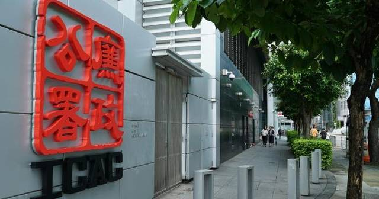
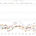
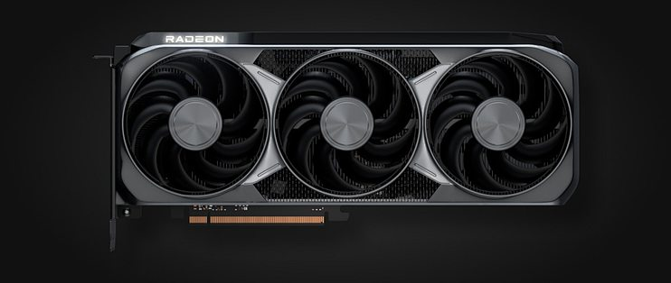
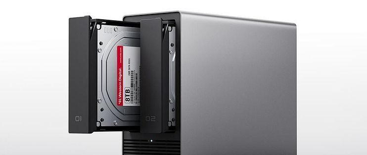
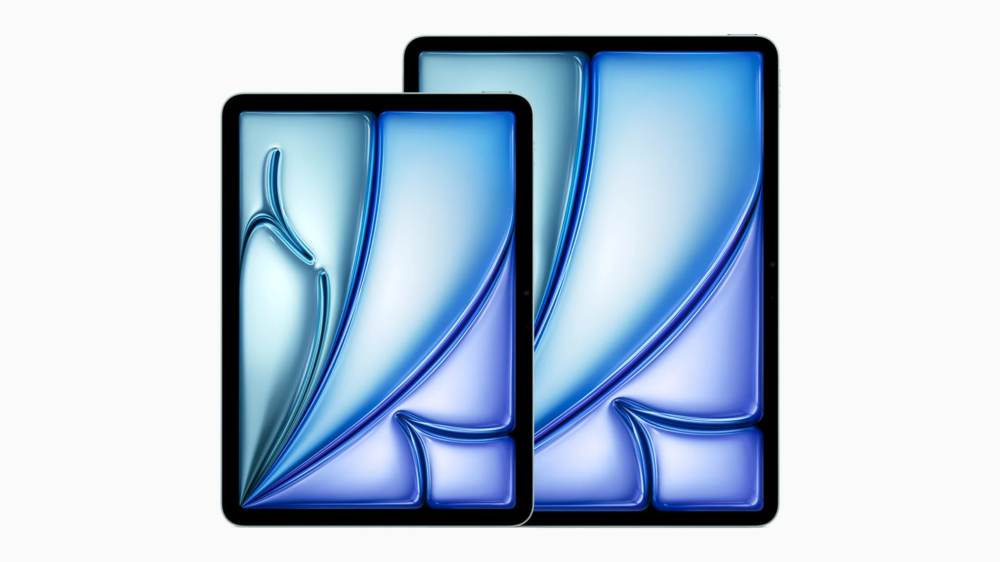
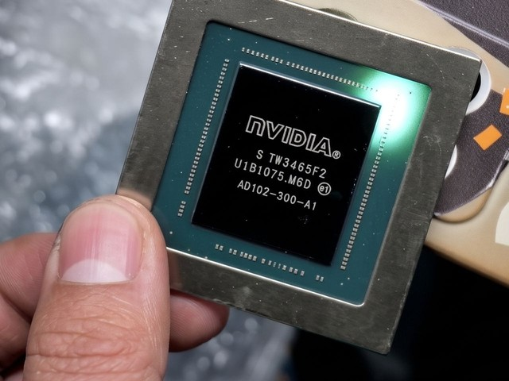
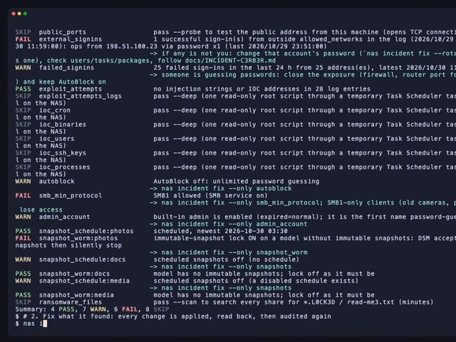

美股科技股上周五急挫拖累亞股今早齊跌，香港則迎來金融科技周與國際金融領袖投資峰會同日開幕；投資博客類今日RSS僅得兩條新文。
大律師公會支持將圍標刑事化建議，同時提醒法例定義必須清晰，以免影響正常的樓宇維修市場。
保安局局長鄧炳強表示，聯合特遣隊正抽絲剝繭尋找線索，務求揪出圍標集團。
財政司司長陳茂波預期，第三季經濟增長高於市場預期，全年增長預測亦可望再上調。
剛過去的10月是香港有紀錄以來最暖的10月，平均氣溫達27.6°C，環保團體推算秋季氣溫可能再破紀錄。
日本今日起實施先付款後退稅安排，有本港旅行社稱退稅流程順暢，並會安排團友回程預早到機場辦理手續。
首屆北都馬拉松吸引約1.5萬人參加，有跑手反映由終點步行往北區運動場取行李的路程辛苦。
大角咀廟會上演500呎LED夜光花式龍表演，吸引大批市民圍觀。
安東尼利成為F1史上最年輕的世界冠軍，寫下新紀錄。
阿仙奴以1：0擊敗利物浦，重奪英超榜首位置。
美國總統特朗普表示，若民主黨在中期選舉後控制國會兩院，他將運用總統否決權。
赫爾松停火期間撤離的居民形容經歷恍如從地獄回來，反映戰區平民處境依然嚴峻。
德國超過34個城市爆發Z世代示威，法蘭克福有商店遭搶掠，內政部批評左翼極端分子煽動暴力。
兩項金融盛事今日同步展開，金融科技周一連五日舉行，政府與監管機構將於活動期間公布人工智能、代幣化及支付互聯等新措施；星期二將公布第三季本地生產總值預先估計數字。

📰廉政公署落案起訴一間清潔公司兩名前高層，涉嫌就採購清潔車輛及維修服務收賄合共逾7,500萬元，案件今日在觀塘裁判法院提堂。
10月美股走勢嚴重分化，科技股成為重災區，資金流向傳統工業、醫藥及消費板塊；文章分析港股在外圍債息飆升及AI盈利疑慮下仍能企穩的原因。
美股三大指數上周齊跌，納指10月累挫約4%；英特爾上周五暴瀉近29%，市場憂慮AI龐大投資難以取得回報。
美股科技股上周五經歷6月以來最慘烈的拋售，分析預期周一亞洲股市將走弱。
受美股拖累，日韓股市今早開市齊跌，韓國KOSPI綜合指數跌1.6%。
人民銀行與中證監今日開會，研究推動支持資本市場工具的使用，市場關注內地會否推出托市方案。
北水淨流出35.6億元，資金買入金斯瑞生物，同時沽售中芯國際。
領展以23億元出售旺角彌敦道T.O.P物業，預計錄得虧損約3.7億元。
招商銀行首三季盈利1,165億元人民幣，按年升逾2%，淨息差降至1.82%。
長飛光纖光纜首三季盈利逾61億元人民幣，按年升12倍，單季盈利暴增逾17倍。
比亞迪10月汽車銷量49萬輛，按年升11%，其中出口量17萬輛，按年升1倍。
理想汽車10月交付新車約2.9萬輛，按年下跌9%。
蔚來10月交付3.4萬輛汽車，按年跌15%，但首10個月交付量仍按年升39%。
港交所推出全新的自願性「香港交易所綠色股權」認證計劃，參照國際認可框架並經獨立評估，協助投資者識別合資格的綠色企業，鞏固香港作為國際可持續金融中心的地位。
匯豐香港表示，現時在港有150名人工智能專才團隊，並計劃在未來兩三年擴大一倍；該行稱最近數年沒有因數碼化轉型而減少人手，並為受轉型影響的同事提供轉型培訓。
領展以23億元沽售旺角T.O.P商場，預計錄得虧損約36.1億元；作者從集團流動負債、融資利息及派息支出等數字分析，認為領展頭寸並不鬆動，出售資產或已成唯一出路，並提醒今次交易暴露部分資產未有合理減值。

💡傳統股災月，港股下跌1,300點收場，尾股、債券、黃金全線下挫；商品組合本月收報269.30元，較上月大跌6.94%，但仍保持第一位，沉船基金則跌1.90%，每單位收報253.40元。
國行Apple智能定於11月4日開始測試，微信8.0.80版本亦已推送；同篇日報亦整理手機卡頓、儲存爆滿等實用玩法。

📱顯示卡因封倉漲價約30%，處理器價格反而處於歷史低位，文章建議今年雙11可先組裝無顯示卡主機再作打算。

📱小米NAS價格降至2,190元，文章提醒消費者先別急於購買4T版本，應按實際儲存需要選擇。
5080顯示卡已從官網消失，24GB版本最快12月才推出，等待減價的消費者今次未必等得到。
華為Mate 90系列上市僅一個月，銷量已超過63萬台。
蘋果iPhone 18 Pro系列上市僅兩個月，銷量已突破600萬部。

📱傳聞指Apple將於2027年上半年推出三款新iPad，iPad Air與Pro將升級OLED螢幕及散熱設計。
傳聞指蘋果或推出配備M7晶片的觸屏OLED MacBook Pro，進一步增強AI能力。
ChatGPT與Codex將共用使用額度，Plus、Pro及Business方案改以Token計算，12月起生效。

📱市場充斥大量二手「魔改假晶片」，有舊晶片被磨面重刻出售，消費者選購二手晶片時須格外留神。

📱開源防護專案「synology-nas-cli」登場，可為Synology DSM系統進行漏洞修復與持續監控。
據報Meta已有家用人形機械人原型，並與中國企業合作開發。
傳聞指Galaxy Z Fold9將令螢幕下鏡頭回歸，機身厚度或薄至3.9mm。
研究者提出循環決策模型Lev，以原生循環語言模型為底座，讓同一組解碼層重複運行多圈，兼顧直接決策的低延遲與難題上多投入計算的能力。
SpaceXAI將為Grok模型生成的文本添加隱形水印，以響應歐盟AI法案的要求。
阿里千問AI眼鏡透過OTA升級，新增通話翻譯、媒體翻譯等功能。
OpenAI等四家企業將推行AI數據抓取退出的統一標準，讓內容方更易表明不被抓取的意願。
Meta擬籌集最高975億美元，甲骨文則公布本輪最後一筆200億美元的融資上限，反映AI基建融資規模持續擴大。
Arm的AGI處理器將於明年導入甲骨文雲端基建OCI，強化雲端運算與代理式AI布局。
調查指逾八成主管認為，在AI助攻下，年輕人才更早躋身領導階層。
SC26頂會論文介紹「八卦爐2」，目標是讓萬卡級別的集群學會臨場應變。
文章探討AI公司是否正要進入盈利時代，檢視收入模式與成本結構能否支撐持續盈利。
文章從第一性原理出發，探討AI基礎設施的真正瓶頸是否在於電力供應。
文章討論具身遞歸自我改進的真假之爭：機械人究竟是在自我進化，還是在反覆刷題。
英偉達開源PixelUMM，捨棄VAE與ViT路線，嘗試在像素空間統一處理視頻。
文章指DeepSeek剛發表的下一代Agent概念，早已被一家矽谷團隊提前半年實現，值得留意技術路線的先後與差異。